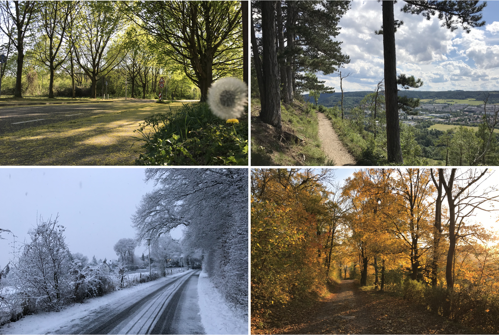

One Mile More
Posted on 20 July, 2025
在德國很容易享受步行的樂趣。無論春夏秋冬，走在市中心的徒步街道、森林小徑或廣闊田野間，總能安心地欣賞風景，在漫步中沉澱思緒。
最近讀到馬太福音5:41 [1]，有了一些新的體會。 耶穌所處的時代，猶太人正受羅馬統治，羅馬士兵有權強迫百姓幫忙背重物，「走一里路」成了一種不得不履行的義務。 今天的我們，也都有自己的「一里路」：可能是公民的義務、工作的本分、或人際關係中的壓力與期待。這些事看似瑣碎，有時甚至令人煩躁，卻常是鍛鍊心志與塑造品格的過程。 那麼，為什麼耶穌鼓勵我們在完成這些責任之後，還要「多走一里路」呢？ 這第二里路不再是被迫，而是出於選擇。它可能是多一點思考、多一份付出、或主動走出舒適圈以成就比自身利益更大的事。 這份自願，讓行動不再只是應付，而成為生命的擴展。真正的自由，或許就在這多走的一里之中展現出來。
經文的這段話讓我在散步或做事時有了不太一樣的態度。 走過一段覺得該停下來的路，若願意再多走一些，常會遇見意想不到的風景與感動。 生命中的「第二里路」，也許就是這樣悄悄開啟新的視野的地方。

{{content-paragraph-2}}
{{content-paragraph-1}}
References
- [1] 林潔美. 多走一里路的愛. https://www.hpch.org.tw/Post/Post.aspx?id=608cab8c-d106-4dd4-8bb6-d275ec95ae6a&category=7998efab-dd2a-4c35-acb6-62912d6f2805.